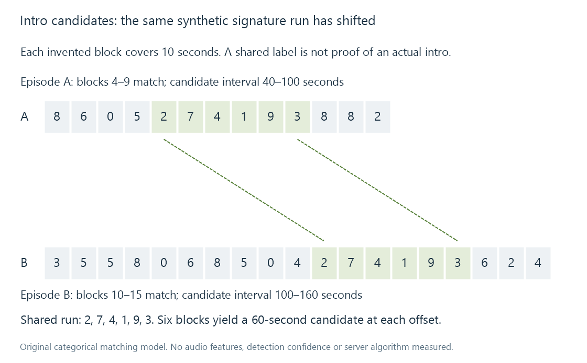

Episode intro detection
Episode intro detection estimates a recurring introduction interval whose start and end markers must belong to each episode’s actual timeline.
Intro detection finds an interval that appears to be a programme's recurring introduction. The useful output is a pair of markers on each episode's timeline: where the introduction starts and where it ends.
A fixed rule such as “skip the first minute” cannot describe every show. An episode can begin with a recap or a variable-length cold open before reaching the familiar title sequence. Another episode can start that sequence immediately.
Recurrence survives a time shift
One possible class of detection approach compares content-derived features across episodes. An audio fingerprint, for example, summarizes aspects of the signal so that a matching passage can be located without requiring complete-file byte equality.
Research such as Haitsma and Kalker's audio-fingerprinting paper develops robust signal matching. It is background for the concept, not evidence that Emby implements that paper's algorithm.
A file hash answers another question. Two independently encoded episodes have different bytes even when they share an opening sequence. A complete-file SHA-256 equality test is not a detector for the repeated portion.
An original matching example
Suppose each ten-second block is represented by an invented integer label. Six matching labels occur in both episode sequences:
Shared labels: 2, 7, 4, 1, 9, 3
Episode A: shared run begins at block 4
Episode B: shared run begins at block 10
Block numbering starts at zero. Under this deliberately coarse model:
| Episode | Candidate start | Candidate end, exclusive | Candidate duration |
|---|---|---|---|
| A | 4 × 10 = 40 seconds | (4 + 6) × 10 = 100 seconds | 60 seconds |
| B | 10 × 10 = 100 seconds | (10 + 6) × 10 = 160 seconds | 60 seconds |

The labels are synthetic. No audio was fingerprinted, and a ten-second block is not a claimed Emby analysis resolution. The example demonstrates how correspondence can survive an offset; it does not establish that the matched passage is a real introduction.
Matching, boundaries and semantic role
Finding repeated content supplies a candidate. Determining usable boundaries is another problem.
An opening song may remain similar while the final title card changes. Dialogue may overlap its beginning. A short fade can make the perceptual boundary differ from the first confidently matched block. A detector needs enough evidence to avoid cutting into preceding dialogue or stopping partway through the opening.
The interval's role also needs interpretation. Recaps can repeat clips; a broadcaster ident can recur; a scene may be reused later. “Found in several episodes” does not by itself mean “safe to skip as an introduction.”
A useful model combines recurrence with context such as location within episodes and consistency across related programmes. The exact features, thresholds and exclusion rules vary by implementation. Neither the synthetic block model nor a general fingerprinting reference supplies Emby's private decisions.
Seasons provide related comparison material
A title sequence can change between seasons. Grouping unrelated episodes together could make the wrong recurrence appear dominant or leave the intended opening unsupported by enough comparisons.
Emby's Intro Skip documentation describes season-based analysis and requires at least two episodes for detection in a season. It also describes background processing and app choices for using the resulting markers. Those documented product behaviors are separate from the explanatory matching model above.
Even within a season, an episode may have a special opening or no recurring sequence. A missing marker can be an accurate result rather than an indication that the entire library scan failed.
Detection does not remove the media
The server can retain markers describing an interval. An app can then offer a button, skip automatically, or ignore those markers according to supported behavior and user choice.
Skipping normally moves playback to the end marker; it does not require editing the original video or deleting the opening from storage. The interval remains part of the resource and can still be played.
The public marker model distinguishes intro-start and intro-end markers from ordinary chapters. For the toy candidate in episode A, the pair would retain 40 seconds as the start and 100 seconds as the end. A single chapter named “Opening” supplies only a location unless additional interval information is defined.
Markers are source-dependent
Replacing an episode with another cut can shift its opening. Trimming a recap changes the start offset. A differently segmented combined programme can put a later episode's introduction inside a larger resource.
The marker values must therefore remain associated with the timeline they describe. If the resource changes, reuse needs valid correspondence or new analysis. A retained series title and poster cannot establish that old intervals still match.
See Also
- Series, seasons and episodes
- Technical analysis of library media
- Movie editions and cuts
- Chapter Markers